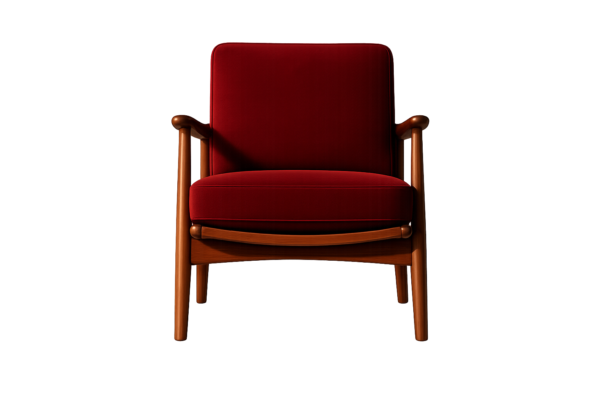
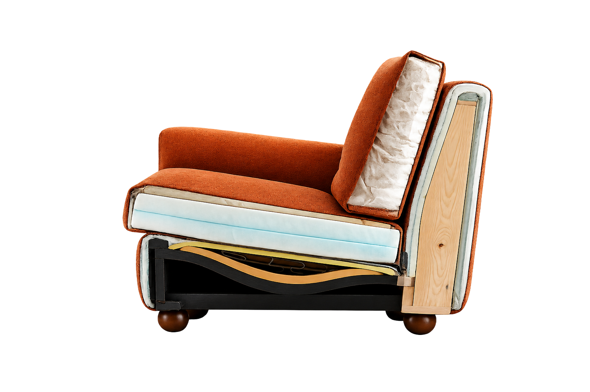
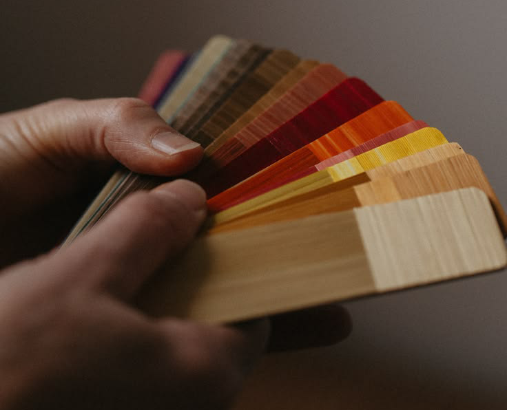

Materiales con historia
Trabajamos con la materia que ya tiene una historia.
Restauramos piezas con historia
para que sigan formando parte de la tuya

Los criterios que guían cada decisión
desde el primer diagnóstico hasta la terminación final.
Trabajamos con la materia que ya tiene una historia.
Cada restauración nace del criterio y la experiencia.
Restauramos lo esencial. Intervenimos lo necesario.
Construido para resistir
el paso del tiempo.
Empezamos restaurando muebles descartados, sin taller ni marca. Ahí aprendimos a diagnosticar antes de intervenir.
Cada pieza define su propio proceso. No aplicamos una técnica única, elegimos la que esa pieza necesita.
Diagnóstico, reparación estructural y rediseño. El mismo proceso que aplicamos en el taller es el que enseñamos en nuestros cursos.


Somos un taller especializado en darle una nueva vida a piezas que ya demostraron que funcionan. Ofrecemos un servicio completo — diagnóstico, reparación estructural y rediseño — para que cada mueble vuelva a tener lugar en tu casa, sin necesidad de producir algo nuevo desde cero.

Tres recorridos que conviven en cada pieza:
la técnica, la materia y el detalle final.

Diagnóstico, intervención estructural, terminación y criterio estético para restaurar una pieza de principio a fin.
$50000/mes
Ver más
Técnicas de entramado, reparación y lectura material para piezas con fibras naturales.
$35000/mes
Ver más
Preparación de superficies, combinaciones de terminación y decisiones de color.
$40000/mes
Ver másNo todas las maderas envejecen igual. Su veta, densidad y comportamiento definen la manera en que una pieza debe ser restaurada. Conocer el material es comprender el mueble desde su origen.
Cada pieza posee una estructura única. Analizar sus componentes nos permite intervenir con precisión, preservar su esencia y garantizar un resultado duradero.

Tela terracota, la decisión estética final. Se cambia sin tocar lo que hay debajo.
Vista esquemática de un mueble tapizado. La construcción puede variar según la tipología y la época de fabricación.
Un adelanto de lo que viene: una primera mirada a nuestra próxima línea de piezas únicas, ensambladas desde fragmentos que ya no tenían arreglo. Cada una, irrepetible.


